For a given principal quantum number \(n\), the total number
of orbitals is \(n^2\). So for \(n = 4\), the total number
of orbitals is \(4^2 = 16\). Each orbital can contain at
most one electron with spin \(+\dfrac{1}{2}\), so the
maximum number of electrons having spin \(+\dfrac{1}{2}\) in
these 16 orbitals is also 16.
Step-by-step explanation:
For \(n = 4\), possible values of \(l\) are:
\(l = 0, 1, 2, 3\)
These correspond to subshells:
\(4s, 4p, 4d, 4f\)
Now count orbitals in each subshell:
\(s\) has 1 orbital
\(p\) has 3 orbitals
\(d\) has 5 orbitals
\(f\) has 7 orbitals
Total orbitals:
\(1 + 3 + 5 + 7 = 16\)
Each orbital can hold two electrons, but only one of them
can have spin \(+\dfrac{1}{2}\).
So if we want the maximum number of electrons with spin
\(+\dfrac{1}{2}\), we place one such electron in each
orbital.
Hence:
maximum number of \(+\dfrac{1}{2}\) spin electrons \(=
16\)
Concept used / theory behind it:
Total number of orbitals in a shell:
\(n^2\)
Total maximum electrons in a shell:
\(2n^2\)
Maximum number of electrons with the same spin in that
shell:
\(n^2\)
This comes from the fact that each orbital can contain at
most one electron of a particular spin orientation.
Why the correct option is right:
Option (d) correctly gives:
16 orbitals in the \(n=4\) shell
16 electrons with spin \(+\dfrac{1}{2}\), one in each
orbital
Why other options are wrong or less suitable:
Options (a), (b), and (c) underestimate the number of
orbitals that can each hold one \(+\dfrac{1}{2}\) electron.
Once 16 orbitals are present, the maximum number of
\(+\dfrac{1}{2}\) electrons must also be 16.
Exam tip / shortcut / elimination clue:
Remember these two fast formulas:
orbitals in shell \(= n^2\)
same-spin maximum electrons in shell \(= n^2\)
So for \(n=4\), both answers become 16 instantly.
Final result:
The required values are 16 and 16.
Chapter / topic / subtopic:
Chapter: Structure of Atom
Topic: Quantum numbers and orbitals
Subtopic: Number of orbitals and spin distribution in a
shell
Correct answer: (b) 137 : 1
Explanation:
The speed of electron in the first Bohr orbit of hydrogen
atom is about \(2.18 \times 10^6 \, m\,s^{-1}\), while speed
of light is \(3 \times 10^8 \, m\,s^{-1}\). Their ratio is
approximately \(\dfrac{3 \times 10^8}{2.18 \times 10^6}
\approx 137\). So the ratio is 137 : 1.
Step-by-step explanation:
Speed of light in vacuum:
\(c = 3 \times 10^8 \, m\,s^{-1}\)
Velocity of electron in the \(n\)-th Bohr orbit is:
This result is closely connected to the fine structure
constant, whose reciprocal is approximately 137.
That is why the ratio \(\dfrac{c}{v_1}\) for hydrogen comes
out near 137.
Why the correct option is right:
Option (b) is right because substituting standard values
gives the ratio approximately 137 : 1.
Why other options are wrong or less suitable:
100 : 1 is too small.
157 : 1 and 191 : 1 are larger than the actual calculated
value.
The standard remembered result for first Bohr orbit is 137 :
1.
Exam tip / shortcut / elimination clue:
This is a famous direct memory result:
\(\dfrac{c}{v_1} \approx 137\)
So if you see first Bohr orbit of hydrogen, 137 should come
to mind immediately.
Final result:
The approximate ratio is 137 : 1.
Chapter / topic / subtopic:
Chapter: Structure of Atom
Topic: Bohr model
Subtopic: Velocity of electron in Bohr orbit
Correct answer: (d) A, B, C and D
Explanation:
Isoelectronic species are species having the same number of
electrons. Here, \(O^{2-}\), \(F^{-}\), \(Na^{+}\), and
\(Mg^{2+}\) all contain 10 electrons each. So all of them
are isoelectronic.
Step-by-step explanation:
\(O^{2-}\)
Atomic number of oxygen = 8
It gains 2 electrons
Total electrons \(= 8 + 2 = 10\)
\(F^{-}\)
Atomic number of fluorine = 9
It gains 1 electron
Total electrons \(= 9 + 1 = 10\)
\(Na^{+}\)
Atomic number of sodium = 11
It loses 1 electron
Total electrons \(= 11 - 1 = 10\)
\(Mg^{2+}\)
Atomic number of magnesium = 12
It loses 2 electrons
Total electrons \(= 12 - 2 = 10\)
Since all four species have 10 electrons, all are
isoelectronic.
Concept used / theory behind it:
Isoelectronic species means:
same number of electrons
It does not mean same atomic number or same size.
Many cations and anions from nearby elements can become
isoelectronic by losing or gaining electrons.
Why the correct option is right:
Option (d) is right because all four listed species contain
10 electrons each.
Why other options are wrong or less suitable:
Options (a), (b), and (c) wrongly leave out one or more
species that also have 10 electrons.
There is no exception here; every one of A, B, C, and D is
isoelectronic.
Exam tip / shortcut / elimination clue:
For such questions, count electrons quickly:
anion \(\Rightarrow\) add electrons
cation \(\Rightarrow\) subtract electrons
If all counts match, all are isoelectronic.
Final result:
All four species are isoelectronic. So the correct option is
(d).
All the given ions are isoelectronic and contain 10
electrons each. In an isoelectronic series, ionic radius
decreases as nuclear charge increases. So the ion with the
highest positive nuclear charge is the smallest, and the one
with the lowest nuclear charge is the largest.
Step-by-step explanation:
First note that all four ions are isoelectronic:
\(O^{2-}\) = 10 electrons
\(F^{-}\) = 10 electrons
\(Na^{+}\) = 10 electrons
\(Mg^{2+}\) = 10 electrons
Now compare their nuclear charges:
\(O\) has \(Z = 8\)
\(F\) has \(Z = 9\)
\(Na\) has \(Z = 11\)
\(Mg\) has \(Z = 12\)
For isoelectronic species:
more nuclear charge \(\Rightarrow\) stronger attraction
on the same number of electrons \(\Rightarrow\) smaller
radius
So the smallest is:
\(Mg^{2+}\)
Then:
\(Na^{+}\)
\(F^{-}\)
\(O^{2-}\)
Hence increasing order of ionic radii is:
\(Mg^{2+} < Na^{+} < F^{-} < O^{2-}\)
Concept used / theory behind it:
In an isoelectronic series:
all species have same number of electrons
size depends mainly on nuclear charge
Higher nuclear charge pulls the same electron cloud more
strongly and decreases size.
Thus:
maximum positive charge / higher \(Z\) gives minimum
radius
more negative ion / lower \(Z\) gives maximum radius
Why the correct option is right:
Option (a) correctly arranges the ions from smallest to
largest based on increasing ionic radius in an isoelectronic
set.
Why other options are wrong or less suitable:
Option (b) wrongly places \(F^{-}\) smaller than \(Na^{+}\).
Options (c) and (d) reverse the isoelectronic trend
completely.
Exam tip / shortcut / elimination clue:
For isoelectronic ions, do not think about period or group
first.
Just compare atomic numbers:
higher \(Z\) \(\Rightarrow\) smaller size
That gives the answer immediately.
Final result:
The increasing order of ionic radii is
\(Mg^{2+} < Na^{+} < F^{-} < O^{2-}\).
Chapter / topic / subtopic:
Chapter: Classification of Elements and Periodicity
Explanation: A molecule has zero dipole moment
when all its bond dipoles cancel each other because of a
perfectly symmetrical shape. So in this question, the real trick
is not just bond polarity, but whether the molecular geometry
allows complete cancellation of dipole moments.
Structures and dipole cancellation
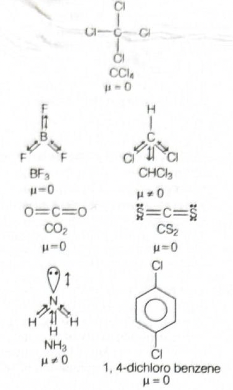
CCl4: It is tetrahedral and
fully symmetrical. Each C–Cl bond is polar, but the four
bond dipoles cancel in space. Hence, (μ = 0).
BF3: It is trigonal planar and
symmetrical. The three B–F bond dipoles are equal and
directed at (120°) to one another, so they cancel. Hence, (μ
= 0).
CO2: It is linear, (O = C = O).
The two C=O bond dipoles are equal and opposite, so net
dipole moment is zero. Hence, (μ = 0).
CS2: It is also linear, (S = C =
S). The two bond dipoles cancel because of symmetry. Hence,
(μ = 0).
1, 4-dichlorobenzene: This is
para-dichlorobenzene. The two C–Cl bond dipoles are equal
and opposite across the benzene ring, so they cancel. Hence,
(μ = 0).
Why CHCl3 and NH3 are not
included
CHCl3: It is tetrahedral, but it
is not symmetrical like CCl4
because one H is different from three Cl atoms. So the bond
dipoles do not cancel completely. Hence, (μ ≠ 0).
NH3: It has trigonal pyramidal
shape because nitrogen has one lone pair. That lone pair
makes the molecule unsymmetrical, so the N–H bond dipoles do
not cancel. Hence, (μ ≠ 0).
Concept used / theory behind it
Dipole moment depends on both
bond polarity and
molecular shape.
Even if bonds are polar, the
net dipole moment can be zero if the
molecule is symmetrical.
Symmetrical molecules like linear, trigonal planar,
tetrahedral, or para-substituted benzene systems often show
zero dipole moment when identical atoms/groups are arranged
evenly.
Unsymmetrical molecules, or molecules containing lone pairs
that disturb symmetry, usually have non-zero dipole moment.
Why the correct option is right
Option (b) includes exactly those molecules in which bond
moments cancel due to symmetry: CCl4,
BF3, CO2, CS2, and 1,
4-dichlorobenzene.
It correctly excludes CHCl3 and NH3,
both of which have non-zero dipole moment.
Why other options are wrong
Option (a): Wrong because it includes
NH3 and CHCl3, both polar molecules.
Option (c): Wrong because it omits CCl4
and BF3, which also have zero dipole moment.
Option (d): Wrong because it includes only
CO2 and CS2, but misses other
zero-dipole molecules.
Exam tip / shortcut / elimination clue
In dipole moment questions, first check
shape, not just whether the bond is polar.
Remember this quick pattern:
Symmetrical tetrahedral like CCl4 → (μ = 0)
Symmetrical trigonal planar like BF3 → (μ =
0)
Linear molecules like CO2, CS2 →
(μ = 0)
Pyramidal molecules like NH3 → polar
Mixed tetrahedral molecules like CHCl3 →
polar
For benzene derivatives, para-substitution with identical
groups often gives cancellation.
Final result: The molecules with zero dipole
moment are CCl4, BF3, CO2,
CS2, and 1, 4-dichlorobenzene. Therefore, the correct
option is (b).
Chapter / topic / subtopic: Chemical Bonding
and Molecular Structure → Polarity of Molecules → Dipole Moment
and Shape-based Cancellation
Correct answer: (d) BrF5 and
XeF4.
Explanation: Isostructural species have the
same shape and usually the same steric arrangement around the
central atom. So we must compare the electron pair arrangement
and the final molecular shape of each pair.
Step-by-step explanation
PF6− and SF6:
Both have six bond pairs around the central atom and no lone
pair. Their geometry is octahedral. So they are
isostructural.
IO3− and XeO3:
Both have three bond pairs and one lone pair around the
central atom. Their electron pair geometry is tetrahedral,
but molecular shape is trigonal pyramidal. So they are
isostructural.
BH4− and NH4+:
Both have four bond pairs and no lone pair. Their shape is
tetrahedral. So they are isostructural.
BrF5 and XeF4:
BrF5 has five bond pairs and one lone pair,
giving a square pyramidal shape. XeF4 has four
bond pairs and two lone pairs, giving a square planar shape.
Since the shapes are different, they are not isostructural.
Concept used / theory behind it
The idea comes from VSEPR theory, which
tells us that electron pairs around the central atom arrange
themselves to minimize repulsion.
To test whether two species are isostructural, count:
bond pairs around the central atom,
lone pairs on the central atom,
and then determine the shape.
If the final molecular shape is the same, they are
isostructural. If shape differs, they are not.
Why the correct option is right
BrF5 is of type (AX5E), so its shape
is square pyramidal.
XeF4 is of type (AX4E2), so
its shape is square planar.
Because square pyramidal and square planar are different
structures, this pair is not isostructural.
Why other options are wrong
Option (a): Both are octahedral, so they
are isostructural.
Option (b): Both are trigonal pyramidal, so
they are isostructural.
Option (c): Both are tetrahedral, so they
are isostructural.
Exam tip / shortcut / elimination clue
Memorize a few standard VSEPR shapes:
(AX4) → tetrahedral
(AX3E) → trigonal pyramidal
(AX6) → octahedral
(AX5E) → square pyramidal
(AX4E2) → square planar
In such questions, first compare the number of lone pairs. A
change in lone pair count often changes shape immediately.
Final result: BrF5 and XeF4
have different shapes, so they are not isostructural. Therefore,
the correct option is (d).
Chapter / topic / subtopic: Chemical Bonding
and Molecular Structure → VSEPR Theory → Molecular Shapes and
Isostructural Species
Correct answer: (a) 64.
Explanation: This question is based on Graham’s
law. The rate of diffusion of a gas is directly proportional to
pressure and inversely proportional to the square root of its
molar mass. Once we write the ratio carefully and use the given
statement that methane diffuses twice as fast, the molecular
mass of gas X comes out to be 64.
32: Too small. A gas of molar mass 32 would
not make methane diffuse exactly twice as fast by the given
key relation.
28: Also too low.
21: Clearly inconsistent with the squared
ratio result.
Exam tip / shortcut / elimination clue
For MCQs based on Graham’s law, remember:
If one gas diffuses (2) times faster, the other gas is
usually (22 = 4) times heavier, provided the
lighter gas is in numerator.
Here methane has molar mass 16, so:
(16 \times 4 = 64)
This kind of shortcut is very useful in entrance exams.
Final result: By the intended Graham’s law
relation used in the attached solution, the molecular mass of
gas X is 64. Therefore, the correct option is
(a).
Chapter / topic / subtopic: States of Matter →
Gaseous State → Graham’s Law of Diffusion
Correct answer: (d) NH3.
Explanation: In the van der Waals equation,
constant (a) measures the strength of intermolecular
attractions. The stronger the attraction between molecules, the
larger the value of (a). Among the given gases, ammonia shows
the strongest intermolecular force because it forms hydrogen
bonds, so it has the maximum value of (a).
Step-by-step explanation
van der Waals constant (a) is related to
attractive forces between gas molecules.
If a gas has very weak attractions, its (a) value is small.
If a gas has strong attractions, its (a) value is large.
Now compare the gases:
He: Noble gas, very small, only weak
dispersion forces → very low (a).
H2: Non-polar and very small
→ weak intermolecular attraction → low (a).
CO2: Larger than He and
H2, so attraction is more, but it does not
show hydrogen bonding.
NH3: Polar molecule and also
shows hydrogen bonding, which is much
stronger than ordinary dispersion forces.
Therefore, NH3 has the highest intermolecular
attraction and hence the largest (a) value.
Concept used / theory behind it
The van der Waals equation is:
((P + \dfrac{an^2}{V^2})(V - nb) = nRT)
Here:
(a) corrects for
intermolecular attraction
(b) corrects for
volume occupied by gas molecules
So larger (a) means stronger attraction between molecules.
Hydrogen bonding increases intermolecular attraction
greatly, so substances capable of H-bonding usually have
larger (a) values.
Why the correct option is right
NH3 molecules are polar.
Nitrogen is highly electronegative, and ammonia molecules
can form hydrogen bonds with one another.
Because of this strong intermolecular attraction, NH3
has the maximum van der Waals constant (a) among the given
options.
Why other options are wrong
H2: Very light and non-polar, so
weak attraction.
He: Monatomic noble gas with extremely weak
dispersion forces.
CO2: Has more attraction than He
and H2, but not as much as NH3
because hydrogen bonding is absent.
Exam tip / shortcut / elimination clue
Whenever you see van der Waals constant (a), think
attraction.
Whenever you see a molecule capable of
hydrogen bonding, it often becomes the
strongest candidate for larger (a).
Quick memory:
(a) → attraction
(b) → bulk / size
Final result: NH3 has the maximum
van der Waals constant (a) because of strong intermolecular
attraction due to hydrogen bonding. Therefore, the correct
option is (d).
Chapter / topic / subtopic: States of Matter →
Real Gases → van der Waals Constants and Intermolecular Forces
Correct answer: (c) 0.10.
Explanation: In aqueous
Na2SO4, the ions mainly act as spectators
and water gets electrolysed. At the anode, oxygen gas is
liberated. So we first calculate how much oxygen is formed from
the charge passed, then convert that amount into volume at STP.
Step-by-step explanation
In aqueous sodium sulfate solution, the actual electrode
reactions are:
At cathode: (2H2O + 2e−
\rightarrow H2 + 2OH−)
At anode: (2H2O \rightarrow O2 +
4H+ + 4e−)
The question asks for the gas at the anode,
so we calculate oxygen formed.
For oxygen:
4 moles of electrons produce 1 mole of O2
Molar mass of O2 = 32
Equivalent mass of O2 = (32/4 = 8)
Using Faraday’s law:
(W = \dfrac{EIt}{96500})
Substitute the values:
(E = 8)
(I = 3\ \text{A})
(t = 10 \times 60 = 600\ \text{s})
So,
(W_{O_2} = \dfrac{8 \times 3 \times 600}{96500})
(W_{O_2} = 0.1492\ \text{g})
Now convert this mass into volume at STP:
32 g O2 occupies 22.4 L at STP
(V_{O_2} = \dfrac{0.1492 \times 22.4}{32})
(V_{O_2} = 0.104\ \text{L})
Approximately,
(V_{O_2} \approx 0.10\ \text{L})
Concept used / theory behind it
This is a standard
Faraday’s laws of electrolysis question.
When an inert electrolyte like aqueous Na2SO4
is electrolysed, water undergoes oxidation and reduction
instead of sulfate ion getting discharged under ordinary
conditions.
So:
hydrogen is evolved at cathode,
oxygen is evolved at anode.
The mass liberated at an electrode is proportional to the
quantity of electricity passed:
(W = \dfrac{EIt}{96500})
If the product is a gas, convert mass into moles and then to
volume using:
(1\ \text{mole gas at STP} = 22.4\ \text{L})
Why the correct option is right
The gas at the anode is oxygen, not hydrogen.
The calculated oxygen mass is (0.1492\ \text{g}).
This corresponds to a volume of (0.104\ \text{L}) at STP.
The nearest option is 0.10 L, which is
option (c).
Why other options are wrong or less suitable
0.19: Too large for the given current and
time.
2.1: Far too large; this would require much
more charge.
0.15: This comes from confusing the mass
value (0.1492 g) with volume in litres.
Exam tip / shortcut / elimination clue
In electrolysis of aqueous salts like
Na2SO4, first ask: which species is
actually discharged? Very often, water is
the reacting species.
At anode in such cases, remember:
water loses electrons,
oxygen is evolved.
A common trap is to stop after finding the mass. If the
question asks for gas volume at STP, always do the final
conversion to litres.
Final result: The volume of oxygen liberated at
the anode at STP is approximately 0.10 L.
Therefore, the correct option is (c).
Chapter / topic / subtopic: Electrochemistry →
Faraday’s Laws of Electrolysis → Gas liberated at electrodes
Correct answer: (d) 6.9.
Explanation: First balance the reduction
reaction of magnetite. Then use mole relation between
Fe3O4 and Fe to find the theoretical
amount of magnetite needed for 4 kg iron. Since the process is
only 80% efficient, the actual required amount must be greater
than the theoretical amount.
For 4 kg iron, the theoretical ore needed is 5.52 kg.
Since the process is only 80% efficient, divide by 0.80:
(5.52/0.80 = 6.9\ \text{kg})
Hence option (d) is correct.
Why other options are wrong or less suitable
5.5: This is close to the theoretical
value, but the question asks for 80% efficiency, so actual
requirement must be higher.
15.5 and 17.0: These are much larger than
required and do not match the stoichiometric calculation.
Exam tip / shortcut / elimination clue
When efficiency is below 100%, the actual reactant needed is
always more than the theoretical amount.
So if your first calculation gives 5.52 kg, the final answer
must be greater than that.
This immediately eliminates 5.5 and helps you choose 6.9
quickly.
Final result: The mass of magnetite needed to
obtain 4 kg of iron at 80% efficiency is
6.9 kg. Therefore, the correct option is
(d).
Chapter / topic / subtopic: Some Basic Concepts
of Chemistry → Stoichiometry → Limiting Yield and Percentage
Efficiency
Correct answer: (a) −41 kJ/mol.
Explanation: We use the relation between
enthalpy and internal energy: (\Delta H = \Delta U + \Delta
(pV)). In this reaction, water changes from liquid to solid, and
there is no gaseous species involved. So the (\Delta
n_{\text{gas}}) term is zero, which makes (\Delta (pV)) zero.
Therefore, enthalpy change becomes equal to internal energy
change.
Step-by-step explanation
The relation is:
(\Delta H = \Delta U + \Delta (pV))
For many chemistry problems involving gases, this is written
as:
(\Delta H = \Delta U + \Delta n_g RT)
Here the process is:
(H2O(l) \rightarrow H2O(s))
No gas is present on either side.
So:
(\Delta n_g = 0)
Hence:
(\Delta H = \Delta U)
Given:
(\Delta U = -41\ \text{kJ mol}^{-1})
Therefore:
(\Delta H = -41\ \text{kJ mol}^{-1})
Concept used / theory behind it
Enthalpy and internal energy are related, but they are not
always the same.
The difference comes from the pressure-volume work term.
When gases are involved, volume change may be significant,
so (\Delta H) and (\Delta U) can differ.
But when only solids and liquids are involved, volume change
is usually negligible in such entrance-exam treatment, so:
(\Delta H \approx \Delta U)
More specifically, using the gas-mole relation:
(\Delta H = \Delta U + \Delta n_g RT)
If (\Delta n_g = 0), then:
(\Delta H = \Delta U)
Why the correct option is right
The process is freezing of water, not a gaseous reaction.
So no gaseous mole change occurs.
Therefore, the correction term is zero and enthalpy change
remains the same as internal energy change.
Hence the correct value is (−41 kJ/mol).
Why other options are wrong or less suitable
41 kJ/mol: Wrong sign. Freezing is
exothermic, so energy decreases.
30 kJ/mol and −30 kJ/mol: These do not
follow from the given value and there is no gas-term
correction here to produce such numbers.
Exam tip / shortcut / elimination clue
Whenever you see:
only solid and liquid species, or
no change in moles of gas,
quickly think:
(\Delta H = \Delta U)
This is a very common shortcut in thermodynamics MCQs.
Final result: Since (\Delta n_g = 0), we get
(\Delta H = \Delta U = -41\ \text{kJ/mol}). Therefore, the
correct option is (a).
Chapter / topic / subtopic: Thermodynamics →
Enthalpy and Internal Energy → Relation between (\Delta H) and
(\Delta U)
Explanation: This is an equilibrium-expression
question. We first write the balanced reaction for ammonia
formation, then use the given initial moles and the equilibrium
moles in terms of x. After substituting the concentrations into
the expression for (K_c), the result simplifies to option (c).
The most important skill here is writing an ICE-type mole
setup:
Initial
Change
Equilibrium
Then convert equilibrium moles into concentration by
dividing by volume.
Finally substitute into the equilibrium constant expression
using the stoichiometric powers.
Why the correct option is right
The ammonia coefficient is 2, so (NH3) appears
squared in the numerator.
Hydrogen coefficient is 3, so (H2) appears cubed
in the denominator.
After replacing (3-3x) by (3(1-x)), the denominator gives:
(27(1-x)^4)
The volume terms simplify to (V^2) in the numerator.
So the correct form is:
(K_c = \dfrac{4x^2V^2}{27(1-x)^4})
Why other options are wrong or less suitable
Option (a): Wrong numerical factor and
denominator form.
Option (b): Wrong power of x and wrong
power of (1 − x).
Option (d): Misses the factor 4 and has
incorrect denominator power.
Exam tip / shortcut / elimination clue
In equilibrium MCQs, the most common mistakes are:
forgetting stoichiometric powers,
forgetting to divide by volume,
not simplifying terms like (3 - 3x = 3(1 - x)).
If you simplify (H_2) carefully, the factor 27 appears
automatically, which is a strong clue that option (c) is
correct.
Final result: The correct value is
\(\dfrac{4x^2V^2}{27(1-x)^4}\). Therefore, the
correct option is (c).
Chapter / topic / subtopic: Equilibrium →
Chemical Equilibrium → Expression for Equilibrium Constant
(Kc)
Correct answer: (c) 4
Explanation: A diprotic acid is an acid that
can donate exactly two protons \((H^+)\) per molecule. Among the
given acids, chromic acid, oxalic acid, pyrosulphuric acid, and
sulphurous acid are diprotic, while citric acid is not diprotic.
Step-by-step explanation
To solve this question, the quickest method is to recall how
many ionisable hydrogens each acid has.
Now check them one by one:
Citric acid = \((C_6H_8O_7)\). It
contains three replaceable acidic
hydrogens, so it is triprotic, not
diprotic.
Chromic acid = \((H_2CrO_4)\). It has
two acidic hydrogens, so it is
diprotic.
Oxalic acid = \((H_2C_2O_4)\). It has
two acidic hydrogens, so it is
diprotic.
Pyrosulphuric acid = \((H_2S_2O_7)\).
It has two acidic hydrogens, so it is
diprotic.
Sulphurous acid = \((H_2SO_3)\). It has
two acidic hydrogens, so it is
diprotic.
Therefore, the number of diprotic acids is
4.
Concept used / theory behind it
Acids are classified by the number of ionisable protons they
can donate:
Monoprotic acids donate one proton,
like \((HCl)\).
Diprotic acids donate two protons, like
\((H_2SO_4)\), \((H_2CO_3)\), \((H_2C_2O_4)\).
Triprotic acids donate three protons,
like \((H_3PO_4)\) and citric acid.
Important point: just counting total hydrogen atoms is not
always enough. We must count only the
ionisable acidic hydrogens.
In oxyacids, hydrogens attached through oxygen \((O-H)\) are
usually acidic.
In carboxylic acids, the hydrogen of the \((COOH)\) group is
acidic. So the number of carboxyl groups often helps
identify basicity.
Why the correct option is right
Out of the five acids listed, only citric acid fails to be
diprotic because it is triprotic.
Hence, the remaining four are diprotic, so option
(c) is correct.
Why other options are wrong
(a) 2 is too small because oxalic acid,
chromic acid, sulphurous acid, and pyrosulphuric acid alone
already make four.
(b) 5 is wrong because citric acid is not
diprotic.
(d) 3 is also wrong because there are four
diprotic acids, not three.
Exam tip / shortcut / elimination clue
For such questions, mentally note the formula:
\((H_2CrO_4)\), \((H_2C_2O_4)\), \((H_2S_2O_7)\),
\((H_2SO_3)\) all clearly suggest two acidic hydrogens.
Citric acid is a famous exception students should remember:
it is triprotic, not diprotic.
A useful memory cue:
citric acid has three acidic carboxylic protons.
Final result
Number of diprotic acids \(= 4\).
So, the correct answer is (c) 4.
Chapter / topic / subtopic
Chapter: Hydrogen / Acids and Bases
Topic: Basicity of acids
Subtopic: Monoprotic, diprotic and
triprotic acids
Correct answer: (d) Both cationic and anionic exchanger one
after the other
Explanation: Deionised or demineralised water
is obtained only when both positive ions and negative ions are
removed from water. So hard water must be passed through a
cation exchanger and then an anion exchanger one after the
other.
Step-by-step explanation
The term deionised water means water from
which dissolved ions have been removed.
Ordinary hard water contains ions like:
\((Ca^{2+})\), \((Mg^{2+})\), \((Na^+)\) as
cations
\((Cl^-)\), \((SO_4^{2-})\), \((HCO_3^-)\) as
anions
If we pass water through only a
cation exchanger, only the positive ions
are removed. The negative ions still remain in the water.
If we pass water through only an
anion exchanger, only the negative ions are
removed. The positive ions still remain.
Therefore, to obtain truly deionised water, we must remove
both types of ions.
Hence hard water is passed through:
a cation exchange resin first
and an anion exchange resin next
So the correct choice is option (d).
Concept used / theory behind it
Ion-exchange method is used for preparing
demineralised water.
The cation exchange resin replaces metal
ions such as \((Ca^{2+})\), \((Mg^{2+})\), \((Na^+)\) with
\((H^+)\).
The anion exchange resin replaces anions
such as \((Cl^-)\), \((SO_4^{2-})\), \((NO_3^-)\) with
\((OH^-)\).
Then \((H^+)\) and \((OH^-)\) combine to form water:
\((H^+ + OH^- \rightarrow H_2O)\)
This is why the final water becomes almost free from
dissolved salts.
This process is different from simple softening. Softening
mainly removes hardness-causing ions, while deionisation
removes nearly all ions.
Why the correct option is right
Option (d) is correct because both cations
and anions must be removed for water to become deionised.
A single exchanger cannot perform complete deionisation.
Why other options are wrong
(a) zeolite is mainly used for softening
hard water by exchanging \((Ca^{2+})\) and \((Mg^{2+})\)
with \((Na^+)\), but it does not remove all ions, so it does
not produce deionised water.
(b) cationic exchanger only removes only
positive ions, not negative ions.
(c) anionic exchanger only removes only
negative ions, not positive ions.
Exam tip / shortcut / elimination clue
Remember this simple line:
Soft water means hardness removed.
Deionised water means all ions removed.
So whenever the question says deionised or
demineralised, immediately think
both cation and anion exchangers.
Final result
Deionised water is obtained by passing water through
both cationic and anionic exchangers one after the
other.
Explanation: The inorganic compound used for
water softening is \(Ca(OH)_2\). It reacts with \(Na_2CO_3\) to
give \(NaOH\), which is strongly alkaline with pH \(= 14\).
Also, \(Ca(OH)_2\) gives a cloudy precipitate with \(CO_2\) due
to formation of \(CaCO_3\). Finally, \(NaOH\) and \(CaO\)
together act as soda lime, which decarboxylates benzoic acid
\((C_6H_5COOH)\) to give benzene \((C_6H_6)\).
Step-by-step explanation
We identify each unknown one clue at a time.
First clue: compound A is
used for water softening.
\((Ca(OH)_2)\), that is slaked lime, is used in the
lime-soda process of softening hard water. So
A = \(Ca(OH)_2\).
Second clue: \(A\) reacts with \(Na_2CO_3\)
to generate an alkaline compound \(B\) whose pH is 14.
The white precipitate of \((CaCO_3)\) makes the solution
cloudy.
Fourth clue: \(B + CaO\) reacts with
organic compound \(C\) to give \(C_6H_6\).
\((NaOH + CaO)\) is soda lime.
Soda lime causes decarboxylation of sodium
salts of carboxylic acids or corresponding acids in suitable
question logic.
To obtain benzene \((C_6H_6)\), the required acid is
benzoic acid, \((C_6H_5COOH)\).
Thus C = \(C_6H_5COOH\).
So the correct set is
\(A = Ca(OH)_2\), \(B = NaOH\), \(C =
C_6H_5COOH\).
Concept used / theory behind it
Lime-soda process: \((Ca(OH)_2)\) and
\((Na_2CO_3)\) are used in water softening to remove
temporary and permanent hardness.
Lime water test: \((Ca(OH)_2)\) turns milky
with \((CO_2)\) because of \((CaCO_3)\) formation.
Soda lime: a mixture of \((NaOH)\) and
\((CaO)\). It is used to remove the \((COOH)\) group from
carboxylic acids or their salts during decarboxylation.
Only option (c) correctly satisfies all
three clues:
water-softening compound = \((Ca(OH)_2)\)
strong alkali formed = \((NaOH)\)
organic acid giving benzene on soda lime decarboxylation
= \((C_6H_5COOH)\)
Why other options are wrong or less suitable
(a) is wrong because \(B\) is not
\((Na_2CO_3)\); the strongly alkaline product formed is
\((NaOH)\).
(b) is wrong because \((C_6H_5CH_2COOH)\)
on decarboxylation would not give benzene directly; it would
give a different hydrocarbon.
(d) is wrong because \(A\) is not calcium
metal \((Ca)\); the water-softening reagent here is calcium
hydroxide \((Ca(OH)_2)\).
Exam tip / shortcut / elimination clue
The moment you see:
used for water softening +
gives cloudy ppt with \(CO_2\)
you should immediately think of
lime water / slaked lime, that is
\((Ca(OH)_2)\).
And when you see:
\(NaOH + CaO\)
immediately think
soda lime decarboxylation.
To get benzene after decarboxylation, the parent acid must
be benzoic acid.
Final result
\(A = Ca(OH)_2\)
\(B = NaOH\)
\(C = C_6H_5COOH\)
So, the correct answer is (c).
Chapter / topic / subtopic
Chapter: Hydrogen / Purification of water
and Organic Chemistry
Topic: Lime-soda process and
decarboxylation
Subtopic: Uses of \(Ca(OH)_2\), soda lime,
benzoic acid to benzene conversion
Correct answer: (d) (A) is false but (R) is true
Explanation: The assertion is false because the
species written as \((B(OH)_2)_6^{3+}\) does not exist in the
stated way as an octahedral boron complex, whereas
\((B(OH)_4)^-\) is a valid tetrahedral species. The reason is
true because boron is electron deficient and behaves as a Lewis
acid, so it readily accepts electron pairs from Lewis bases such
as \(H_2O\) and \(OH^-\).
Step-by-step explanation
Assertion–Reason questions should be solved in two separate
stages:
first check whether Assertion is correct
then check whether Reason is correct
Checking Assertion (A):
The assertion says that \((B(OH)_2)_6^{3+}\) and
\((B(OH)_4)^-\) form octahedral and tetrahedral structures
respectively.
The second part is correct: \((B(OH)_4)^-\) is tetrahedral
around boron.
But the first species is not a standard stable boron complex
of the kind claimed here. Boron usually does not form such
an octahedral hexacoordinated cationic species in this
context.
So because the first statement is wrong, the whole Assertion
becomes false.
Checking Reason (R):
Boron has only six electrons in its valence shell in many of
its compounds, so it is electron deficient.
Because of this, boron accepts a lone pair from species like
\((H_2O)\) and \((OH^-)\), so it behaves as a
Lewis acid.
Therefore the Reason is true.
Hence, the correct option is (d): Assertion
is false but Reason is true.
Concept used / theory behind it
Boron belongs to group 13 and has valence electronic
configuration \((2s^2 2p^1)\).
In many covalent compounds of boron, such as \((BF_3)\), the
central boron atom has only six electrons around it.
So boron is electron deficient and tends to
accept electron pairs from donors.
This is why boron compounds often behave as
Lewis acids.
When \((OH^-)\) donates a lone pair to boron, a tetrahedral
borate species such as \((B(OH)_4)^-\) can form.
That tetrahedral geometry is consistent with four sigma
bonds around boron.
However, the claimed octahedral boron hydroxide cation in
the assertion is not acceptable here.
Tetrahedral borate ion structure
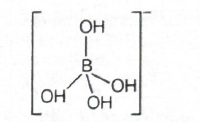
The image shows the tetrahedral arrangement around boron in
\((B(OH)_4)^-\).
Boron accepts one additional lone pair and becomes
four-coordinated.
Why the correct option is right
Option (d) exactly matches the truth
values:
Assertion = false
Reason = true
This is the standard outcome when one part of the assertion
is wrong but the reason itself is scientifically correct.
Why other options are wrong
(a) is wrong because the Assertion is not
true.
(b) is wrong for the same reason: it
incorrectly treats Assertion as true.
(c) is wrong because the Reason is not
false; boron really is electron deficient and acts as a
Lewis acid.
Exam tip / shortcut / elimination clue
In boron chemistry, keep two quick facts in mind:
Boron is electron deficient
\((B(OH)_4)^-\) is tetrahedral
If a question claims a normal octahedral hydroxide complex
for boron in this kind of elementary chemistry context, be
cautious.
In Assertion–Reason questions, even if one half of the
assertion is correct, the full Assertion is considered false
if the other half is wrong.
Final result
The Assertion is false.
The Reason is true.
So, the correct answer is (d).
Chapter / topic / subtopic
Chapter: p-Block Elements
Topic: Boron and its compounds
Subtopic: Electron deficiency, Lewis
acidity, structure of borate species
Correct answer: (c) III > I > II
Explanation: Graphite is the most stable
allotrope of carbon, so its standard enthalpy of formation
\((\Delta H_f^\circ)\) is taken as zero. Diamond is less stable
than graphite, so its \((\Delta H_f^\circ)\) is positive.
Fullerene \((C_{60})\) is even less stable than diamond, so it
has the highest \((\Delta H_f^\circ)\). Therefore, the order is
fullerene > diamond > graphite.
Step-by-step explanation
This question is solved by using one basic fact:
the more stable the form, the lower its enthalpy.
Among the allotropes of carbon, graphite is
the most stable form under standard conditions.
That is why the standard enthalpy of formation of graphite
is taken as:
\((\Delta H_f^\circ \text{ of graphite} = 0)\)
Diamond is less stable than graphite, so
converting graphite to diamond requires energy. Hence
diamond has a positive \((\Delta H_f^\circ)\).
Fullerene \((C_{60})\) is even less stable
than diamond, so its enthalpy of formation is still higher.
Thus:
\((\Delta H_f^\circ \text{ of fullerene}) > (\Delta
H_f^\circ \text{ of diamond}) > (\Delta H_f^\circ
\text{ of graphite})\)
So the order becomes:
III > I > II
Concept used / theory behind it
Standard enthalpy of formation is the
enthalpy change when one mole of a substance is formed from
its elements in their most stable standard states.
For carbon, the standard state is graphite,
not diamond and not fullerene.
So by convention:
\((\Delta H_f^\circ \text{ of graphite} = 0)\)
If another allotrope is less stable than graphite, its
enthalpy is higher, so its \((\Delta H_f^\circ)\) will be
positive.
Important approximate values often remembered are:
These values confirm that fullerene has the highest enthalpy
of formation among the three.
Why the correct option is right
Option (c) correctly places fullerene
first, diamond second and graphite last:
III > I > II
This matches the stability order:
graphite is most stable
diamond is less stable
fullerene is still less stable
Why other options are wrong
(a) is wrong because graphite cannot have
higher \((\Delta H_f^\circ)\) than the other allotropes; it
is taken as zero.
(b) is wrong because graphite is not
greater than diamond or fullerene in enthalpy of formation.
(d) is wrong because it incorrectly places
graphite above diamond.
Exam tip / shortcut / elimination clue
Always remember this quick anchor:
Graphite = standard state of carbon = \((\Delta
H_f^\circ = 0)\)
Once graphite is fixed as lowest, compare the remaining
allotropes by stability.
Less stable means higher enthalpy of formation.
Final result
\((\Delta H_f^\circ)\) order:
Fullerene > Diamond > Graphite
So, the correct answer is
(c) III > I > II.
Chapter / topic / subtopic
Chapter: p-Block Elements / Allotropes of
Carbon
Topic: Carbon allotropes and stability
Subtopic: Standard enthalpy of formation of
graphite, diamond and fullerene
Correct answer: (c) D
Explanation: Hyperconjugation is possible only
when the carbocation has at least one \(\alpha\)-hydrogen on the
carbon adjacent to the positively charged carbon. Among the
given species, \((CH_3)^+\) has no adjacent carbon and hence no
\(\alpha\)-hydrogen. So it lacks hyperconjugative stability.
Carbocations and \(\alpha\)-hydrogen count
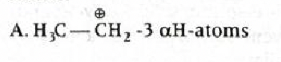
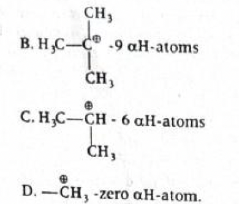
The key idea shown is that hyperconjugation depends on the
number of \(\alpha\)-hydrogens available next to the
positively charged carbon.
Step-by-step explanation
To solve this question fast, do not try to draw many
resonance forms. Just count \(\alpha\)-hydrogens.
Hyperconjugation is the delocalisation of
electrons from a \((C-H)\) sigma bond of the adjacent carbon
into an empty \(p\)-orbital or \(\pi\)-system.
So for a carbocation to show hyperconjugation, there must
be:
an adjacent carbon
and at least one hydrogen on that adjacent carbon
Now examine the given species:
A = \(CH_3-CH_2^+\). The adjacent
\(CH_3\) group has 3 \(\alpha\)-hydrogens, so
hyperconjugation is possible.
B = \((CH_3)_3C^+\). There are three
adjacent methyl groups, giving a total of 9
\(\alpha\)-hydrogens, so hyperconjugation is strongly
possible.
C = \((CH_3)_2CH^+\). There are 6
\(\alpha\)-hydrogens from the two methyl groups, so
hyperconjugation is possible.
D = \(CH_3^+\). There is no adjacent
carbon at all, so there are zero \(\alpha\)-hydrogens.
Hence no hyperconjugation.
Therefore, species D lacks hyperconjugative
stability.
Concept used / theory behind it
Hyperconjugation is often called
no-bond resonance.
It stabilises carbocations, free radicals and alkenes when
suitable \(\alpha\)-hydrogens are present.
For carbocations, the empty \(p\)-orbital on the positively
charged carbon overlaps with the adjacent \((C-H)\) sigma
bond.
The more \(\alpha\)-hydrogens, the greater the number of
hyperconjugative structures, and usually the greater the
stability.
That is why the common carbocation stability order is:
\((3^\circ > 2^\circ > 1^\circ > CH_3^+)\)
The methyl carbocation \((CH_3^+)\) is the least stable
because it has no alkyl group and no \(\alpha\)-hydrogen
support.
Why the correct option is right
Option (c) corresponds to
D.
D is \((CH_3)^+\), which has
zero \(\alpha\)-hydrogens.
So it cannot undergo hyperconjugation and therefore lacks
hyperconjugative stability.
Why other options are wrong or less suitable
A is not correct because \(CH_3-CH_2^+\)
has 3 \(\alpha\)-hydrogens.
B is not correct because tert-butyl
carbocation has 9 \(\alpha\)-hydrogens and strong
hyperconjugative stabilisation.
C is not correct because isopropyl
carbocation has 6 \(\alpha\)-hydrogens.
Exam tip / shortcut / elimination clue
In such questions, ask only one thing:
Is there any \(\alpha\)-hydrogen next to the charged
carbon?
If the answer is no, hyperconjugation is not possible.
The fastest memory line is:
\(CH_3^+\) has no neighbouring carbon, so no
hyperconjugation.
Final result
The species lacking hyperconjugative stability is
D.
So, the correct answer is (c).
Chapter / topic / subtopic
Chapter: Organic Chemistry
Topic: Electronic effects in organic
molecules
Subtopic: Hyperconjugation and carbocation
stability
Correct answer: (d) 5
Explanation: Cold, dilute, aqueous \(KMnO_4\)
adds two hydroxyl groups across each double bond to form vicinal
diols. The given compound already contains one \(({-}OH)\) group
and has two double bonds. So total hydroxyl groups in the
product \(= 1 + 2 + 2 = 5\).
Product formed after hydroxylation
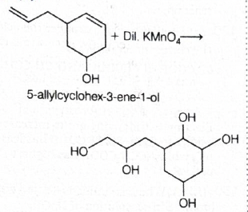
The structure clearly shows that both double bonds are
converted into diols, while the original alcohol group
remains present.
Step-by-step explanation
First identify what reagent is being used:
cold, dilute, aqueous \((KMnO_4)\)
This reagent does
mild oxidation of alkenes and converts each
\((C=C)\) bond into a vicinal glycol.
That means each double bond gains:
one \(({-}OH)\) on one carbon
and one \(({-}OH)\) on the other carbon
So each double bond contributes
2 hydroxyl groups.
Now count in the given compound:
there is already one \(({-}OH)\) group
because the name ends with 1-ol
there is one double bond in the
cyclohex-3-ene ring
there is one more double bond in the
allyl side chain
Total double bonds \(= 2\).
Hydroxyl groups added by reagent \(= 2 \times 2 = 4\).
Including the original alcohol group:
Total \(({-}OH)\) groups \(= 4 + 1 = 5\)
Hence the answer is 5.
Concept used / theory behind it
Cold dilute \((KMnO_4)\) is known as
Baeyer’s reagent.
It reacts with alkenes to produce
vicinal diols, not cleavage, under mild
conditions.
This is an addition reaction across the double bond.
Important distinction:
cold dilute \((KMnO_4)\) gives
hydroxylation
hot concentrated \((KMnO_4)\) can cause
oxidative cleavage
So in this question, do not break the molecule. Just add two
\(({-}OH)\) groups to each alkene.
Why the correct option is right
The molecule has:
1 original hydroxyl group
2 double bonds
Each double bond gives 2 more hydroxyl groups on treatment
with cold dilute \((KMnO_4)\).
Therefore total hydroxyl groups \(= 1 + 4 = 5\).
So option (d) is correct.
Why other options are wrong
(a) 1 ignores hydroxylation of the double
bonds.
(b) 2 and (c) 3 also
undercount the number of \(({-}OH)\) groups added.
The presence of two separate double bonds is the main clue
here.
Exam tip / shortcut / elimination clue
Whenever you see cold dilute \((KMnO_4)\),
think:
each double bond \(\rightarrow\) two OH
groups
Then simply add any hydroxyl groups already present in the
original compound.
Do not overcomplicate by trying oxidation cleavage under
these conditions.
Final result
Total number of hydroxyl groups in the product \(= 5\).
So, the correct answer is (d) 5.
Chapter / topic / subtopic
Chapter: Hydrocarbons / Organic Reactions
Topic: Oxidation of alkenes
Subtopic: Baeyer’s reagent and vicinal diol
formation
Correct answer: (d) \(C_6H_6Cl_6\)
Explanation: In the presence of ultra-violet
light, benzene reacts with chlorine by an addition mechanism,
not the usual electrophilic substitution mechanism. Three
molecules of chlorine add across the benzene ring to form
benzene hexachloride \((BHC)\), also called
hexachlorocyclohexane, whose molecular formula is
\((C_6H_6Cl_6)\).
Formation of benzene hexachloride under \(h\nu\)
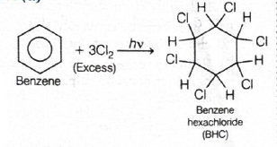
The image shows addition of three \((Cl_2)\) molecules under
ultra-violet light, giving benzene hexachloride.
Step-by-step explanation
This question is a classic reagent-condition question.
Normally, benzene reacts with chlorine in the presence of a
Lewis acid catalyst such as \((FeCl_3)\) or \((AlCl_3)\) by
electrophilic substitution.
But here the condition is different:
excess chlorine
ultra-violet light \((h\nu)\)
Under these conditions, benzene undergoes
free radical addition.
Option (d) is correct because addition of 3
chlorine molecules gives:
\((C_6H_6Cl_6)\)
The number of hydrogen atoms remains 6 because chlorine is
added, not substituted, under the given condition.
Why other options are wrong
(a) \(C_6Cl_6\) is wrong because it assumes
all hydrogens are removed, which does not happen here.
(b) \(C_6H_3Cl_3\) and
(c) \(C_6H_2Cl_4\) correspond to partial
substitution-type ideas, not the actual photochemical
addition product.
Exam tip / shortcut / elimination clue
Memorise this pair:
\((Cl_2/FeCl_3)\) with benzene \(\rightarrow\)
substitution
\((Cl_2/h\nu)\) with benzene \(\rightarrow\)
addition, giving BHC
So when you see UV light, think
BHC = \(C_6H_6Cl_6\).
Final result
The product formed is benzene hexachloride with molecular
formula \((C_6H_6Cl_6)\).
So, the correct answer is (d).
Chapter / topic / subtopic
Chapter: Hydrocarbons
Topic: Reactions of benzene
Subtopic: Photochemical addition of
chlorine to benzene and BHC formation
Correct answer: (d) \(6 \times 10^{-8}\, cm\)
Explanation: Since KBr has rock salt \((NaCl)\)
type structure, the number of formula units per unit cell is \(Z
= 4\). Using the density relation \((\rho = \dfrac{Z \times
M}{N_A \times a^3})\), we can calculate the unit-cell volume and
then the edge length \(a\). The value comes out close to \(6
\times 10^{-8}\, cm\).
Step-by-step explanation
This is a direct crystal density formula question.
Hence the required edge length is approximately \((6 \times
10^{-8}\, cm)\).
Concept used / theory behind it
The density of a crystal is related to the mass present in
one unit cell and the volume of the unit cell.
The standard formula is:
\((\rho = \dfrac{Z \times M}{N_A \times a^3})\)
Here, \(Z\) is the number of formula units per unit cell.
For some common structures:
simple cubic: \((Z = 1)\)
body-centred cubic: \((Z = 2)\)
face-centred cubic: \((Z = 4)\)
rock salt \((NaCl)\) type: \((Z = 4)\)
KBr crystallises in NaCl type arrangement, so remembering
\((Z = 4)\) is the key starting point.
Why the correct option is right
Only option (d) matches the value obtained
from the density formula.
The numerical answer comes close to \((6 \times 10^{-8}\,
cm)\), so option (d) is correct.
Why other options are wrong or less suitable
(a) is too small.
(b) is too large.
(c) does not match the cube-root
calculation from the unit-cell volume.
Exam tip / shortcut / elimination clue
In crystal-density questions, first identify the structure
type and immediately write \(Z\).
For rock salt type solids like NaCl, KCl, KBr, always
remember:
\((Z = 4)\)
That single fact usually decides the whole problem.
Final result
Edge length of the unit cell:
\((a \approx 6 \times 10^{-8}\, cm)\)
So, the correct answer is
(d) \(6 \times 10^{-8}\, cm\).
Chapter / topic / subtopic
Chapter: Solid State
Topic: Crystal structure and density of
unit cell
Subtopic: Density formula for ionic
crystals and rock salt structure
Correct answer: (c) B, C only
Explanation: An ideal solution is defined by
two main conditions: it obeys Raoult’s law at all
concentrations, and the intermolecular interactions between
unlike and like molecules are nearly the same. Obeying the ideal
gas equation is not the criterion for an ideal
solution, so statement A is not correct.
Step-by-step explanation
This question is solved by checking each statement one by
one.
Statement (A): “it obeys ideal gas
equation”
This is not the defining property of an ideal
liquid solution.
The ideal gas equation \((PV = nRT)\) applies to gases, not
to the definition of ideal liquid solutions.
So (A) is false.
Statement (B): “it obeys Raoult’s law at
all concentrations”
This is the standard definition of an ideal solution.
So (B) is true.
Statement (C): “solute-solute,
solute-solvent and solvent-solvent interactions are similar”
This is also true.
In an ideal solution, the attraction between A-A, B-B and
A-B molecules is nearly the same.
So (C) is true.
Therefore, the correct combination is:
B and C only
Hence the answer is (c).
Concept used / theory behind it
An ideal solution is one that obeys
Raoult’s law over the entire range of composition.
Its important features are:
\((\Delta H_{mix} = 0)\)
\((\Delta V_{mix} = 0)\)
intermolecular attractions between unlike molecules are
almost equal to those between like molecules
That is why mixing does not produce extra heat or volume
change in an ideal solution.
Common examples often quoted are benzene + toluene and
\(n\)-hexane + \(n\)-heptane.
Why the correct option is right
Option (c) contains exactly the two correct
conditions:
Raoult’s law at all concentrations
similar intermolecular interactions
These are the actual characteristics of an ideal solution.
Why other options are wrong or less suitable
(a) A only is wrong because statement A
itself is false.
(b) A, B only is wrong because A is false
though B is true.
(d) C only is incomplete because B is also
true.
Exam tip / shortcut / elimination clue
Whenever you see ideal solution,
immediately remember this trio:
obeys Raoult’s law
\((\Delta H_{mix} = 0)\)
\((\Delta V_{mix} = 0)\)
Do not confuse ideal solution with
ideal gas. That is a very common trap.
Final result
The correct statements are B and C only.
So, the correct answer is (c).
Chapter / topic / subtopic
Chapter: Solutions
Topic: Ideal and non-ideal solutions
Subtopic: Conditions for an ideal solution
and Raoult’s law
Correct answer: (d) \(C_6H_{12}O_6\)
Explanation: For equimolal solutions,
depression in freezing point depends on the van’t Hoff factor
\(i\). The smaller the value of \(i\), the smaller the freezing
point depression, so the higher the final freezing point.
Glucose \((C_6H_{12}O_6)\) is a non-electrolyte, so \(i = 1\),
which is the minimum among the given options. Therefore, it has
the highest freezing point.
Step-by-step explanation
Use the formula for depression in freezing point:
\((\Delta T_f = iK_fm)\)
Since all solutions are equimolal, \(m\) is
the same for all.
Also, the solvent is water in all cases, so \(K_f\) is also
the same.
Therefore, the only factor that changes is the
van’t Hoff factor \(i\).
Larger \(i\) means more particles in solution, so larger
freezing point depression.
But the question asks for the
highest freezing point, which means the
least depression.
So we need the smallest \(i\).
Now check each solute:
\((C_6H_5NH_3Cl)\) dissociates into 2 ions, so \((i =
2)\).
\((Ca(NO_3)_2)\) dissociates into 3 ions, so \((i =
3)\).
\((LaCl_3)\) dissociates into 4 ions, so \((i = 4)\).
\((C_6H_{12}O_6)\) is glucose, a non-electrolyte, so
\((i = 1)\).
The smallest \(i\) is for glucose.
Hence its freezing point will be the
highest.
Concept used / theory behind it
Freezing point depression is a
colligative property.
It depends on the number of solute particles, not on their
chemical identity.
The formula is:
\((\Delta T_f = iK_fm)\)
For the same solvent and same molality:
greater \(i \Rightarrow\) greater depression
smaller \(i \Rightarrow\) smaller depression
A non-electrolyte does not dissociate, so it produces the
smallest number of particles.
That is why non-electrolytes often give the highest freezing
point among equimolal solutions.
Why the correct option is right
Option (d) is correct because glucose
\((C_6H_{12}O_6)\) has \((i = 1)\), the minimum value among
all the given solutes.
So it causes the least freezing point depression, and
therefore the highest freezing point.
Why other options are wrong or less suitable
(a) is wrong because \((C_6H_5NH_3Cl)\)
dissociates into 2 ions, so \((i = 2)\).
(b) is wrong because \((Ca(NO_3)_2)\) gives
3 ions, so depression is greater.
(c) is wrong because \((LaCl_3)\) gives 4
ions, so it has the largest depression and hence the lowest
freezing point among the given options.
Exam tip / shortcut / elimination clue
For equimolal colligative-property questions, immediately
compare the number of particles formed in solution.
If the question asks for
highest freezing point, choose the solute
with the smallest \(i\).
In most such MCQs, the non-electrolyte is the correct
answer.
Final result
The highest freezing point is for
\(C_6H_{12}O_6\).
So, the correct answer is (d).
Chapter / topic / subtopic
Chapter: Solutions
Topic: Colligative properties
Subtopic: Depression in freezing point and
van’t Hoff factor
Correct answer: (b)
Explanation: Acetic acid is a weak electrolyte.
Its molar conductivity \((\lambda_m)\) increases sharply on
dilution because the degree of ionisation increases
significantly at lower concentration. Therefore, as
\((\sqrt{C})\) increases, \((\lambda_m)\) decreases in the
manner shown by graph (b).
Variation of molar conductivity for acetic acid
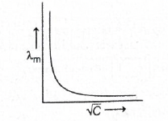
The graph shows very high molar conductivity at very low
concentration and a rapid fall as concentration increases.
Step-by-step explanation
This is a concept-based graph question.
We first identify the type of electrolyte:
acetic acid \((CH_3COOH)\) is a
weak electrolyte
Weak electrolytes are only partially ionised in solution.
When the solution is diluted, ionisation increases strongly.
As a result, the number of ions available for conduction
increases.
So molar conductivity \((\lambda_m)\) becomes much larger on
dilution.
That means:
at low concentration, \((\lambda_m)\) is high
at high concentration, \((\lambda_m)\) is low
Since the horizontal axis is \((\sqrt{C})\), moving to the
right means concentration is increasing.
So the graph must start with high \((\lambda_m)\) at small
\((\sqrt{C})\) and then decrease as \((\sqrt{C})\)
increases.
Among the given options, this matches graph
(b).
Concept used / theory behind it
Molar conductivity is defined as the conductance of all the
ions produced by one mole of electrolyte in solution.
For strong electrolytes, molar conductivity increases on
dilution, but only gradually.
For weak electrolytes, molar conductivity increases on
dilution very sharply because dilution
increases ionisation appreciably.
For weak electrolytes like acetic acid:
concentration decreases \(\Rightarrow\) degree of
dissociation increases
degree of dissociation increases \(\Rightarrow\)
\((\lambda_m)\) increases
This is linked with Ostwald’s dilution law and the
weak-electrolyte behaviour studied in electrochemistry.
Why the correct option is right
Option (b) correctly shows high molar
conductivity at low concentration and decreasing molar
conductivity as concentration increases.
This is exactly how acetic acid behaves because it is a weak
electrolyte.
Why other options are wrong or less suitable
(a) is wrong because it shows
\((\lambda_m)\) increasing with concentration, which is
opposite to the actual trend.
(c) is wrong because molar conductivity
does not first increase and then decrease like a hump-shaped
curve.
(d) is wrong because the curve is U-shaped,
which has no physical meaning here.
Exam tip / shortcut / elimination clue
For conductivity graph questions, first ask:
Is the electrolyte strong or weak?
If it is a weak electrolyte like acetic acid, remember:
dilution sharply increases \((\lambda_m)\)
So the graph must show a steep decrease when plotted against
increasing \((\sqrt{C})\).
Final result
The correct graph is (b).
So, the correct answer is (b).
Chapter / topic / subtopic
Chapter: Electrochemistry
Topic: Conductance of electrolytic
solutions
Subtopic: Variation of molar conductivity
of weak electrolytes with concentration
Explanation: The units of the rate constants
tell us the order of each reaction. Since \(k_1\) has unit
\((s^{-1})\), reaction 1 is first order. Since \(k_2\) and
\(k_3\) have units \((L\,mol^{-1}\,s^{-1})\), reactions 2 and 3
are second order. At \((1\,M)\) concentration of \(A\), the
numerical values of the rates become easy to compare, and we get
\(r_1 : r_2 : r_3 = 1 : 0.1 : 0.01\).
Step-by-step explanation
This question is solved in two quick stages:
first identify the order from the unit of \(k\)
then calculate the rate at \((A = 1\,M)\)
Reaction 1: \((k_1 = 1\,s^{-1})\)
The unit \((s^{-1})\) corresponds to a
first-order reaction.
The unit of rate constant depends on the order of reaction.
Common units:
zero order: \((mol\,L^{-1}\,s^{-1})\)
first order: \((s^{-1})\)
second order: \((L\,mol^{-1}\,s^{-1})\)
This is a standard shortcut used in chemical kinetics.
For a first-order reaction:
\((r = k(A))\)
For a second-order reaction involving one reactant:
\((r = k(A)^2)\)
Since the concentration here is \((1\,M)\), powers of
concentration do not complicate the arithmetic because
\((1^2 = 1)\).
Why the correct option is right
Option (d) exactly matches the calculated
rates:
\((r_1 = 1)\)
\((r_2 = 0.1)\)
\((r_3 = 0.01)\)
So,
\((r_1 = 10r_2)\)
\((r_3 = \dfrac{r_2}{10})\)
Why other options are wrong or less suitable
(a) is wrong because \(r_1\) is much larger
than \(r_3\), not smaller.
(b) is wrong because \(r_1\) is not
\(\dfrac{r_2}{10}\); actually \(r_1 = 10r_2\).
(c) has the first relation correct \((r_1 =
100r_3)\), but the second relation is wrong because \(r_2 =
10r_3\), not \(\dfrac{r_3}{10}\).
Exam tip / shortcut / elimination clue
In unit-based kinetics questions, always read the unit of
\(k\) before doing anything else.
Also notice when concentration is \((1\,M)\); it makes
comparison much faster.
At \((A = 1)\), many rate expressions reduce numerically to
just the value of \(k\), though the order still matters
conceptually.
Final result
\((r_1 = 10r_2)\)
\((r_3 = \dfrac{r_2}{10})\)
So, the correct answer is (d).
Chapter / topic / subtopic
Chapter: Chemical Kinetics
Topic: Rate law and order of reaction
Subtopic: Units of rate constant and
comparison of reaction rates
Correct answer: (d) 0.5
Explanation: For Freundlich adsorption
isotherm, \((x/m = kp^{1/n})\). The slope of the linear form is
\((1/n)\). Using the two adsorption data points, we get \((1/n
\approx 0.46)\), which is approximately \(0.5\).
Hence the slope of Freundlich adsorption isotherm is
0.5.
Concept used / theory behind it
Freundlich adsorption isotherm is:
\((\dfrac{x}{m} = kp^{1/n})\)
Taking logarithm:
\((\log \dfrac{x}{m} = \log k + \dfrac{1}{n}\log p)\)
This is of the form \((y = c + mx)\), so the slope of the
graph of \((\log (x/m))\) versus \((\log p)\) is:
\((\dfrac{1}{n})\)
For a favourable adsorption process, \((0 < 1/n <
1)\).
Why the correct option is right
The calculated value of the slope is about \(0.46\), and the
nearest option is 0.5.
So option (d) is correct.
Why other options are wrong or less suitable
(a) 1.0 is too large.
(b) \(4/3\) is greater than 1 and does not
match the calculation.
(c) 3 is far too large and physically not
suitable here for \((1/n)\).
Exam tip / shortcut / elimination clue
In Freundlich isotherm questions, remember one very
important fact:
slope = \((1/n)\)
Whenever two data points are given, divide the equations
first. That removes \(k\) immediately and saves time.
Also, most valid answers for slope in such adsorption
questions are usually between 0 and 1.
Final result
Slope of Freundlich adsorption isotherm \(\approx 0.5\).
So, the correct answer is (d) 0.5.
Chapter / topic / subtopic
Chapter: Surface Chemistry
Topic: Adsorption isotherms
Subtopic: Freundlich adsorption isotherm
and slope calculation
Correct answer: (b) \(2000\, K\)
Explanation: The direct non-catalytic reaction
between nitrogen and oxygen to form nitric oxide requires very
high temperature because nitrogen has a very strong \((N \equiv
N)\) bond. This reaction becomes significant only around the
high-temperature range of about \(1600{-}2200\,K\). Hence the
nearest correct minimum temperature given is \(2000\,K\).
Step-by-step explanation
The reaction involved is:
\((N_2 + O_2 \rightleftharpoons 2NO)\)
This is a direct combination of nitrogen and oxygen without
catalyst.
The problem is that \((N_2)\) is extremely stable because of
its strong triple bond \((N \equiv N)\).
Breaking this bond requires a very large amount of energy.
Therefore, ordinary temperatures are not sufficient for
appreciable reaction.
The reaction becomes important only at very high
temperatures, roughly in the range:
\((1600{-}2200\,K)\)
Among the given options, the most appropriate value is:
\((2000\,K)\)
So option (b) is correct.
Concept used / theory behind it
The formation of nitric oxide from nitrogen and oxygen is an
endothermic process.
Endothermic reactions are favoured at higher temperatures.
In addition, the activation energy is very high because the
nitrogen molecule is exceptionally stable.
That is why nitrogen and oxygen can coexist in air at room
temperature without reacting significantly.
Only under high-energy conditions, such as electric sparks,
lightning, or very high temperature, does \((NO)\) formation
become appreciable.
Why the correct option is right
Option (b) matches the known
high-temperature condition for the non-catalytic formation
of \((NO)\) from \((N_2)\) and \((O_2)\).
It lies in the practical temperature range where the
reaction can occur appreciably.
Why other options are wrong or less suitable
(a) \(3000\,K\) is unnecessarily high
compared with the standard temperature range usually
remembered for this reaction.
(c) \(1000\,K\) is too low to overcome the
high activation barrier effectively.
(d) \(500\,K\) is far too low.
Exam tip / shortcut / elimination clue
Whenever you see direct reaction of \((N_2)\) with another
substance, immediately think:
strong triple bond, so very high temperature
needed
For \((N_2 + O_2 \rightarrow 2NO)\), the remembered answer
in competitive chemistry is around
\(2000\,K\).
Final result
The minimum temperature required is approximately
\(2000\,K\).
So, the correct answer is (b).
Chapter / topic / subtopic
Chapter: p-Block Elements / Nitrogen Family
Topic: Nitric oxide formation
Subtopic: High-temperature non-catalytic
reaction of \((N_2)\) and \((O_2)\)
Correct answer: (c) (A) is true but (R) is false
Explanation: Both rhombic sulphur and
monoclinic sulphur are allotropes of sulphur containing \(S_8\)
ring molecules, so the Assertion is true. But the Reason is
false because the \(S_8\) ring is not planar; it has a puckered,
crown-like non-planar structure.
Step-by-step explanation
In assertion–reason questions, test both statements
separately.
Assertion (A): “Both rhombic and monoclinic
sulphur have \(S_8\) molecules.”
This is correct.
Both of these crystalline allotropes contain sulphur as
cyclic \((S_8)\) molecules.
The difference between them is not the formula of the
molecule, but the way these \((S_8)\) units are packed in
the crystal lattice.
So Assertion is true.
Reason (R): “They have planar structure.”
This is false.
The \((S_8)\) ring is not planar like benzene.
Instead, it has a puckered ring or
crown-shaped non-planar structure.
Therefore, Reason is false.
So the correct option is (c): Assertion is
true but Reason is false.
Concept used / theory behind it
Sulphur shows allotropy.
The two common crystalline allotropes are:
rhombic sulphur
monoclinic sulphur
Both are made of \((S_8)\) molecules.
They differ in crystal form and stability range:
rhombic sulphur is stable below \(96^\circ C\)
monoclinic sulphur is stable between \(96^\circ C\) and
\(119^\circ C\)
The \((S_8)\) ring is folded, not flat.
This non-planar arrangement reduces strain and gives the
characteristic crown shape.
Why the correct option is right
Option (c) correctly represents the truth
values:
Assertion = true
Reason = false
That is exactly the chemistry of rhombic and monoclinic
sulphur.
Why other options are wrong or less suitable
(a) is wrong because the Reason is not
true.
(b) is wrong for the same reason; it
incorrectly treats the Reason as true.
(d) is wrong because the Assertion is not
false; both allotropes do contain \((S_8)\) molecules.
Exam tip / shortcut / elimination clue
Remember this pair:
rhombic sulphur = \(S_8\)
monoclinic sulphur = \(S_8\)
But do not confuse sulphur ring with a planar aromatic ring.
The standard description is:
\(S_8\) has a puckered crown-shaped ring
Final result
Assertion is true and Reason is false.
So, the correct answer is (c).
Chapter / topic / subtopic
Chapter: p-Block Elements
Topic: Allotropy of sulphur
Subtopic: Rhombic sulphur, monoclinic
sulphur and structure of \(S_8\)
Correct answer: (a) (A) is true, (R) is true and (R) is the
correct explanation for (A)
Explanation: Hydrogen fluoride has a much
higher boiling point than other hydrogen halides because HF
molecules are strongly associated through intermolecular
hydrogen bonding. This strong attraction between molecules
requires extra energy to separate them, so the boiling point
becomes unusually high.
Step-by-step explanation
In assertion–reason questions, first test the Assertion and
then the Reason.
Assertion (A): “Hydrogen fluoride has
higher boiling point than other hydrogen halides.”
This is correct.
Among hydrogen halides \((HF, HCl, HBr, HI)\), HF shows an
abnormally high boiling point.
Fluorine is very small and highly electronegative, so the
\((H-F)\) bond is highly polar.
As a result, neighbouring HF molecules attract each other
strongly by hydrogen bonding.
This intermolecular association raises the boiling point.
Therefore, the Reason correctly explains the Assertion.
Concept used / theory behind it
Normally, in the series of hydrogen halides, boiling point
tends to increase with molecular mass because London
dispersion forces become stronger:
\((HCl < HBr < HI)\)
But HF does not follow this simple trend because it shows
hydrogen bonding.
Hydrogen bonding forms when hydrogen is attached to a very
electronegative atom like \(F\), \(O\), or \(N\).
In HF, the polarity is so high that molecules associate
strongly, often forming chains through hydrogen bonds.
Because of this strong intermolecular force, more heat is
needed to convert liquid HF into vapour.
Why the correct option is right
Option (a) is correct because both
statements are true.
Also, the Reason is not just true independently; it directly
explains why HF has a higher boiling point than the other
hydrogen halides.
Why other options are wrong or less suitable
(b) is wrong because the Reason does
explain the Assertion.
(c) is wrong because the Reason is not
false.
(d) is wrong because the Assertion is not
false; HF really does have the highest boiling point among
hydrogen halides.
Exam tip / shortcut / elimination clue
Whenever you see an abnormal physical property in a small
molecule like HF, \(H_2O\), or \(NH_3\), immediately think
of hydrogen bonding.
For hydrogen halides, remember:
\(HF\) is the exception because of hydrogen bonding
\(HCl, HBr, HI\) mainly follow mass-based intermolecular
force trend
Final result
Assertion is true.
Reason is true.
Reason is the correct explanation of Assertion.
So, the correct answer is (a).
Chapter / topic / subtopic
Chapter: Chemical Bonding / p-Block
Elements
Topic: Intermolecular forces and hydrogen
halides
Subtopic: Hydrogen bonding and boiling
point anomaly of HF
Correct answer: (b) pyramidal; square pyramidal
Explanation: In \(XeO_3\), xenon has three bond
pairs and one lone pair, so the shape is trigonal pyramidal. In
\(XeOF_4\), xenon has five bond pairs and one lone pair, giving
an octahedral electron-pair arrangement and a square pyramidal
molecular shape.
Shapes of \(XeO_3\) and \(XeOF_4\)
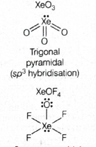
The image shows \(XeO_3\) as trigonal pyramidal and
\(XeOF_4\) as square pyramidal.
Step-by-step explanation
This is a VSEPR-theory question. We identify the number of
bond pairs and lone pairs on xenon in each molecule.
For \(XeO_3\):
Xenon is the central atom.
It is bonded to three oxygen atoms.
There is one lone pair on xenon.
So the total number of electron domains is 4.
Electron-pair geometry is tetrahedral.
With one lone pair and three bonded atoms, the molecular
shape becomes trigonal pyramidal.
For \(XeOF_4\):
Xenon is bonded to one oxygen and four fluorine atoms.
There is one lone pair on xenon.
So there are 6 electron domains around xenon.
Electron-pair geometry is octahedral.
With one lone pair in an octahedral arrangement, the
molecular shape becomes
square pyramidal.
Hence, the structures are:
\(XeO_3\) = pyramidal
\(XeOF_4\) = square pyramidal
Concept used / theory behind it
According to VSEPR theory, the shape of a molecule depends
on repulsions between electron pairs around the central
atom.
Lone pair–bond pair and lone pair–lone pair repulsions are
stronger than bond pair–bond pair repulsions.
That is why the actual molecular shape is obtained after
considering lone pairs properly.
For \((AX_3E)\)-type species, the shape is trigonal
pyramidal.
For \((AX_5E)\)-type species, the shape is square pyramidal.
Here:
\(XeO_3\) behaves like \((AX_3E)\)
\(XeOF_4\) behaves like \((AX_5E)\)
Why the correct option is right
Option (b) correctly gives:
pyramidal for \(XeO_3\)
square pyramidal for \(XeOF_4\)
This matches the VSEPR-based analysis exactly.
Why other options are wrong or less suitable
(a) is wrong because \(XeO_3\) is not
planar and \(XeOF_4\) is not trigonal bipyramidal.
(c) is wrong because \(XeO_3\) is not
planar.
(d) is wrong because \(XeOF_4\) is not
square planar; one atom remains above the square plane,
giving square pyramidal shape.
Exam tip / shortcut / elimination clue
For xenon compounds, count total electron domains around
xenon first.
Then remove the lone pair mentally to get the molecular
shape.
Useful memory anchors:
\(XeO_3\) → trigonal pyramidal
\(XeOF_4\) → square pyramidal
Final result
The structures of \(XeO_3\) and \(XeOF_4\) are
pyramidal and
square pyramidal, respectively.
So, the correct answer is (b).
Chapter / topic / subtopic
Chapter: p-Block Elements
Topic: Noble gas compounds
Subtopic: VSEPR shapes of xenon oxides and
oxyfluorides
Correct answer: (d) Zn, Cd, Hg
Explanation: In the \(+2\) oxidation state,
\(Zn^{2+}\), \(Cd^{2+}\), and \(Hg^{2+}\) all have completely
filled \(d\)-subshells. Their configurations are \(Zn^{2+} =
(Ar)3d^{10}\), \(Cd^{2+} = (Kr)4d^{10}\), and \(Hg^{2+} =
(Xe)4f^{14}5d^{10}\).
Step-by-step explanation
This question is solved by writing the electronic
configuration of each metal in the \(+2\) state.
\(Zn\):
\(Zn = (Ar)3d^{10}4s^2\)
\(Zn^{2+}\) loses two \(4s\) electrons
\(Zn^{2+} = (Ar)3d^{10}\)
\(Cd\):
\(Cd = (Kr)4d^{10}5s^2\)
\(Cd^{2+}\) loses two \(5s\) electrons
\(Cd^{2+} = (Kr)4d^{10}\)
\(Hg\):
\(Hg = (Xe)4f^{14}5d^{10}6s^2\)
\(Hg^{2+}\) loses two \(6s\) electrons
\(Hg^{2+} = (Xe)4f^{14}5d^{10}\)
So all three, \(Zn\), \(Cd\), and \(Hg\), have \(d^{10}\)
configuration in the \(+2\) oxidation state.
Hence the correct option is (d).
Concept used / theory behind it
When transition metals form cations, electrons are removed
first from the outer \(ns\) orbital and then from the
\((n-1)d\) orbital.
This rule is very important in inorganic chemistry.
The group 12 elements:
\(Zn\)
\(Cd\)
\(Hg\)
typically have outer configuration \((n-1)d^{10}ns^2\).
After losing two \(s\)-electrons, they become
\((n-1)d^{10}\), that is, completely filled \(d\)-subshells.
This is one reason why they show behaviour somewhat
different from typical transition elements.
Why the correct option is right
Option (d) contains exactly the three
metals whose \(+2\) ions are \(d^{10}\).
That makes it the correct choice.
Why other options are wrong or less suitable
(a) is wrong because \(Cu^{2+}\) is
\((Ar)3d^9\), not \(d^{10}\), and \(Ni^{2+}\) is
\((Ar)3d^8\).
(b) is wrong because \(Ni^{2+}\) is not
\(d^{10}\), and \(Au^{2+}\) is not normally \(d^{10}\).
(c) is wrong because \(Au^{2+}\) and
\(Pd^{2+}\) are not \(d^{10}\) in the required way.
Exam tip / shortcut / elimination clue
Group 12 is a very useful memory block:
\(Zn^{2+}, Cd^{2+}, Hg^{2+}\) are all \(d^{10}\)
If you see a question asking which metals have filled
\(d\)-shell in \(+2\) state, immediately check these three
first.
Final result
The elements with full \(d^{10}\) configuration in \(+2\)
state are Zn, Cd, Hg.
So, the correct answer is (d).
Chapter / topic / subtopic
Chapter: d- and f-Block Elements
Topic: Electronic configuration of
transition-metal ions
Subtopic: \(d^{10}\) configuration of group
12 metals in \(+2\) state
Explanation: Both \((Cr(H_2O)_6)^{2+}\) and
\((Fe(H_2O)_6)^{2+}\) are high-spin complexes because \(H_2O\)
is a weak-field ligand. They each contain 4 unpaired electrons,
so both have the same spin-only magnetic moment.
Unpaired electrons in the two matching complexes
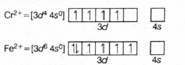
The image shows that both complexes have 4 unpaired
electrons in the \(d\)-orbitals.
Step-by-step explanation
To compare magnetic moments, we need the number of unpaired
electrons \(n\), because:
\((\mu = \sqrt{n(n+2)}\, BM)\)
So the pair with the same magnetic moment must have the same
value of \(n\).
\((Cr(H_2O)_6)^{2+}\):
\(Cr = (Ar)3d^54s^1\)
\(Cr^{2+} = (Ar)3d^4\)
\(H_2O\) is a weak-field ligand, so it forms a high-spin
octahedral complex.
Thus \(d^4\) high spin has
4 unpaired electrons.
\((Fe(H_2O)_6)^{2+}\):
\(Fe = (Ar)3d^64s^2\)
\(Fe^{2+} = (Ar)3d^6\)
Again, \(H_2O\) is weak field, so the complex is high
spin.
High-spin \(d^6\) also has
4 unpaired electrons.
Therefore, both complexes have the same spin-only magnetic
moment:
\((\mu = \sqrt{4(4+2)} = \sqrt{24}\, BM)\)
Hence option (c) is correct.
Concept used / theory behind it
The spin-only magnetic moment is given by:
\((\mu = \sqrt{n(n+2)}\, BM)\)
Here \(n\) is the number of unpaired electrons.
So magnetic moment comparison reduces to counting unpaired
electrons correctly.
\(H_2O\) is a weak-field ligand, so it usually forms
high-spin octahedral complexes.
\(Cl^-\) is also a weak-field ligand, and \((CoCl_4)^{2-}\)
is tetrahedral and high spin.
Useful unpaired-electron counts:
\(Cr^{2+} = d^4 \rightarrow 4\) unpaired in weak field
\(Fe^{2+} = d^6 \rightarrow 4\) unpaired in weak field
\(Mn^{2+} = d^5 \rightarrow 5\) unpaired
\(Co^{2+} = d^7\) tetrahedral high spin \(\rightarrow
3\) unpaired
Why the correct option is right
Option (c) is correct because both
complexes contain exactly 4 unpaired electrons.
Therefore both have the same spin-only magnetic moment
\((\sqrt{24}\, BM)\).
Why other options are wrong or less suitable
(a) is wrong because \((CoCl_4)^{2-}\) has
3 unpaired electrons, while \((Fe(H_2O)_6)^{2+}\) has 4.
(b) is wrong because \((Mn(H_2O)_6)^{2+}\)
has 5 unpaired electrons, while \((Cr(H_2O)_6)^{2+}\) has 4.
(d) is wrong because \((Cr(H_2O)_6)^{2+}\)
has 4 unpaired electrons, while \((CoCl_4)^{2-}\) has 3.
Exam tip / shortcut / elimination clue
In coordination-compound magnetism questions:
first write oxidation state
then write \(d\)-count
then check ligand strength and geometry
If the ligand is \(H_2O\), think weak field and usually high
spin.
For quick memory:
high-spin \(d^4\) and high-spin \(d^6\) both have 4
unpaired electrons
Final result
The pair with the same spin-only magnetic moment is
\((Cr(H_2O)_6)^{2+}\) and \((Fe(H_2O)_6)^{2+}\).
So, the correct answer is (c).
Chapter / topic / subtopic
Chapter: Coordination Compounds
Topic: Magnetic properties of coordination
complexes
Subtopic: Spin-only magnetic moment and
unpaired electron count
Correct answer: (c) III and IV
Explanation: In Fischer projections, \(D\)- and
\(L\)-forms are identified from the position of the \((OH)\)
group on the chiral carbon farthest from the carbonyl group. For
fructose, structure III has the terminal reference \((OH)\) on
the right, so it is \(D\)-fructose. Structure IV has that
\((OH)\) on the left, so it is \(L\)-fructose.
Fischer projections of \(D\)-fructose and
\(L\)-fructose
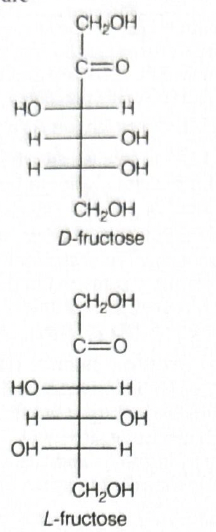
The image shows the standard Fischer projections of
\(D\)-fructose and \(L\)-fructose used for comparison with
the given options.
Step-by-step explanation
This is a stereochemistry question based on Fischer
projections of fructose.
Fructose is a ketohexose, so in its
open-chain Fischer form:
the carbonyl group is at \(C_2\)
the stereochemistry is checked using the chiral carbon
farthest from the carbonyl group
For monosaccharides, the \(D/L\) notation depends on the
position of the \((OH)\) group on the
lowest chiral carbon.
If the \((OH)\) on that carbon is on the
right, the sugar is \(D\)-form.
If the \((OH)\) on that carbon is on the
left, the sugar is \(L\)-form.
Now examine the structures:
Structure III: the \((OH)\) on the
lowest chiral carbon is on the right.
So III is \(D\)-fructose.
Structure IV: the \((OH)\) on the
lowest chiral carbon is on the left. So
IV is \(L\)-fructose.
Therefore, the correct pair is III and IV.
Concept used / theory behind it
\(D/L\) nomenclature does not directly tell whether a
compound rotates plane-polarised light to the right or left.
It is a relative configuration based on
comparison with glyceraldehyde.
In Fischer projections of sugars:
look at the chiral carbon farthest from the carbonyl
group
\((OH)\) on right \(\Rightarrow D\)
\((OH)\) on left \(\Rightarrow L\)
For fructose, since it is a ketose, the carbonyl is at
\(C_2\), so the lowest stereogenic carbon is the deciding
carbon.
Why the correct option is right
Option (c) correctly matches:
III as \(D\)-fructose
IV as \(L\)-fructose
This follows directly from the position of the \((OH)\)
group on the farthest chiral carbon.
Why other options are wrong or less suitable
(a) is wrong because II is not the Fischer
projection of \(D\)-fructose in the required configuration.
(b) is wrong because I does not represent
\(D\)-fructose and III is not \(L\)-fructose.
(d) is wrong because II is not
\(D\)-fructose, though IV is \(L\)-fructose.
Exam tip / shortcut / elimination clue
For sugar stereochemistry questions, never check all chiral
centres first.
First identify:
where the carbonyl group is
then locate the chiral carbon farthest from it
That single carbon decides \(D\) or \(L\).
Final result
\(D\)-fructose is represented by III.
\(L\)-fructose is represented by IV.
So, the correct answer is (c) III and IV.
Chapter / topic / subtopic
Chapter: Biomolecules
Topic: Carbohydrates and stereochemistry
Subtopic: Fischer projections and \(D/L\)
configuration of fructose
Correct answer: (c)
Explanation: In the presence of peroxide, HBr
adds to the double bond by the anti-Markovnikov mechanism. So
methylenecyclohexane first forms bromomethylcyclohexane.
Treatment with \(KCN\) replaces bromine by \((CN)\), giving a
nitrile, and acidic hydrolysis of the nitrile gives the
corresponding carboxylic acid \(({-}CH_2COOH)\). This matches
option (c).
Reaction sequence leading to the product
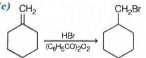
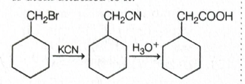
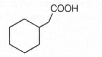
The sequence clearly converts the exocyclic double bond into
a \(({-}CH_2COOH)\) side chain attached to cyclohexane.
Step-by-step explanation
The starting compound is
methylenecyclohexane, which has an
exocyclic double bond.
Step 1: \(HBr\) in presence of peroxide
\((C_6H_5CO)_2O_2\)
This means the reaction follows the
peroxide effect, so \(HBr\) adds by
anti-Markovnikov addition.
Therefore:
\(Br\) goes to the terminal \(CH_2\) carbon
\(H\) goes to the ring carbon of the double bond
So the product after step 1 is
cyclohexylmethyl bromide, that is,
ring-\((CH_2Br)\).
Step 2: \(KCN\)
Cyanide ion performs nucleophilic substitution on the alkyl
bromide:
\(({-}CH_2Br \rightarrow {-}CH_2CN)\)
Step 3: \((H_3O^+, \Delta)\)
Acidic hydrolysis of nitrile converts \(({-}CN)\) into
carboxylic acid:
\(({-}CH_2CN \rightarrow {-}CH_2COOH)\)
Hence the final product is
cyclohexylacetic acid, which matches
option (c).
Concept used / theory behind it
The peroxide effect is shown only by HBr
and leads to anti-Markovnikov addition through a
free-radical mechanism.
This effect is not shown by HCl or HI under normal exam
conditions.
\(KCN\) is an ambident nucleophile, but in simple
nucleophilic substitution with alkyl halides it generally
forms nitriles through carbon attack:
\((RBr + KCN \rightarrow RCN)\)
Nitriles on acidic hydrolysis give carboxylic acids:
\((RCN \xrightarrow{H_3O^+,\Delta} RCOOH)\)
So this question is really a three-step concept chain:
anti-Markovnikov addition
cyanide substitution
nitrile hydrolysis
Why the correct option is right
Option (c) contains the product with a
\(({-}CH_2COOH)\) side chain attached to cyclohexane.
That is exactly what is obtained after the three-step
sequence.
Why other options are wrong or less suitable
(a) and (b) incorrectly
place a methyl group and carboxyl group directly on the ring
carbons, which does not follow from the reaction sequence.
(d) has a longer side chain than required;
only one extra carbon is introduced by cyanide before
hydrolysis, giving \(({-}CH_2COOH)\), not a longer chain.
Exam tip / shortcut / elimination clue
Whenever you see:
\(HBr/peroxide\)
then \(KCN\)
then hydrolysis
think:
anti-Markovnikov bromide formation
\(Br \rightarrow CN\)
\(CN \rightarrow COOH\)
This is a very common stepwise-conversion pattern in exams.
Final result
The major product is the structure shown in
option (c).
So, the correct answer is (c).
Chapter / topic / subtopic
Chapter: Hydrocarbons / Haloalkanes and
Haloarenes / Organic Conversions
Topic: Peroxide effect, nucleophilic
substitution and nitrile hydrolysis
Subtopic: Anti-Markovnikov addition of HBr
followed by \(CN\) substitution and hydrolysis
Correct answer: (d) 2-hydroxybenzoic acid
Explanation: Intramolecular hydrogen bonding
occurs when the donor and acceptor groups are present within the
same molecule at suitable positions. In 2-hydroxybenzoic acid
\((o\)-hydroxybenzoic acid or salicylic acid), the \((OH)\)
group and \((COOH)\) group are ortho to each other, so they can
form a stable intramolecular hydrogen bond.
Intramolecular hydrogen bonding in \(o\)-hydroxybenzoic
acid
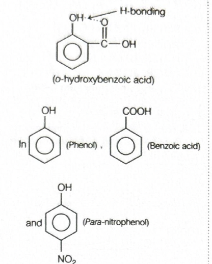
The image shows the hydrogen bond forming within the same
molecule in 2-hydroxybenzoic acid.
Step-by-step explanation
To get intramolecular hydrogen bonding, the
molecule must have:
a hydrogen-bond donor like \((OH)\)
a hydrogen-bond acceptor nearby in the same molecule
proper spatial arrangement, usually at ortho position in
aromatic compounds
Now examine the options:
Phenol: it has an \((OH)\) group but no
suitably placed acceptor group within the same molecule
for intramolecular hydrogen bonding.
Benzoic acid: it mainly forms
intermolecular hydrogen-bonded dimers,
not intramolecular hydrogen bonding.
\(p\)-Nitrophenol: the \((OH)\) and
\((NO_2)\) groups are para to each other, so they are
too far apart for intramolecular hydrogen bonding. It
prefers intermolecular hydrogen bonding.
2-hydroxybenzoic acid: the \((OH)\) and
\((COOH)\) groups are ortho to each other, so a
six-membered chelate-like hydrogen-bonded ring forms
within the same molecule.
Hence, the correct answer is
2-hydroxybenzoic acid.
Concept used / theory behind it
Hydrogen bonding can be:
intermolecular = between different
molecules
intramolecular = within the same
molecule
Intramolecular hydrogen bonding is common when donor and
acceptor groups are positioned so that a stable 5-membered
or 6-membered ring can form.
In aromatic compounds,
ortho substitution often favours
intramolecular hydrogen bonding.
Option (d) is correct because the ortho
arrangement of \((OH)\) and \((COOH)\) allows hydrogen bond
formation within the same molecule.
This gives stable intramolecular hydrogen bonding.
Why other options are wrong or less suitable
(a) lacks the necessary nearby acceptor
group.
(b) forms intermolecular dimeric hydrogen
bonding instead.
(c) has para substitution, so the groups
are too far apart for intramolecular hydrogen bonding.
Exam tip / shortcut / elimination clue
In aromatic hydrogen-bonding questions, check the
ortho position first.
If donor and acceptor are ortho and can make a 5- or
6-membered ring, intramolecular hydrogen bonding is very
likely.
Memory cue:
salicylic acid = intramolecular H-bonding
Final result
Intramolecular hydrogen bonding is present in
2-hydroxybenzoic acid.
So, the correct answer is (d).
Chapter / topic / subtopic
Chapter: Organic Chemistry
Topic: Hydrogen bonding
Subtopic: Intramolecular hydrogen bonding
in aromatic compounds
Correct answer: (c) (A) is true but (R) is false
Explanation: Tertiary alcohols do produce
turbidity immediately with Lucas reagent because they react
fastest to form insoluble alkyl chlorides. But the Reason is
false because Lucas reagent is not a mixture of conc. \(HNO_3\)
and \(ZnCl_2\). It is a mixture of
conc. \(HCl\) and
anhydrous \(ZnCl_2\).
Step-by-step explanation
First test the Assertion.
Assertion (A): “Tertiary alcohols produce
turbidity immediately with Lucas reagent.”
This is true.
Lucas reagent is used to distinguish primary, secondary and
tertiary alcohols based on the rate of formation of alkyl
chlorides.
Tertiary alcohols react fastest because they form the most
stable carbocations, so substitution occurs very quickly.
The alkyl chloride formed is insoluble in the reaction
medium, so turbidity appears immediately.
Now test the Reason.
Reason (R): “Lucas reagent is a \(1:1\)
mixture of conc. \(HNO_3\) and anhydrous \(ZnCl_2\).”
This is false.
Lucas reagent is actually a mixture of:
conc. \(HCl\)
anhydrous \(ZnCl_2\)
Since the Assertion is true but the Reason is false, the
correct option is (c).
Concept used / theory behind it
Lucas reagent is used for classifying alcohols by their
reaction rate with concentrated hydrochloric acid in
presence of \(ZnCl_2\).
\(ZnCl_2\) acts as a Lewis acid and helps the substitution
reaction.
This trend is mainly due to carbocation stability in the
substitution process.
Why the correct option is right
Option (c) matches the actual facts:
Assertion is true
Reason is false
Tertiary alcohols do react immediately, but the reagent has
been stated incorrectly in the Reason.
Why other options are wrong or less suitable
(a) and (b) are wrong
because the Reason is not true.
(d) is wrong because the Assertion is not
false.
Exam tip / shortcut / elimination clue
Always remember the composition of Lucas reagent exactly:
conc. \(HCl\) + anhydrous \(ZnCl_2\)
And remember the turbidity order:
\(3^\circ\): immediate
\(2^\circ\): few minutes
\(1^\circ\): no turbidity at room temperature
The wrong acid in the reagent is a classic trap.
Final result
Assertion is true.
Reason is false.
So, the correct answer is (c).
Chapter / topic / subtopic
Chapter: Alcohols, Phenols and Ethers
Topic: Distinction between alcohols
Subtopic: Lucas reagent and Lucas test
Correct answer: (d) \(CH_3COCH_3\)
Explanation: The given alcohol is propan-2-ol,
which is a secondary alcohol. Secondary alcohols on heating with
copper at \(573\,K\) undergo dehydrogenation to give ketones.
Therefore, propan-2-ol forms propanone \((CH_3COCH_3)\).
Dehydrogenation of secondary alcohol with copper
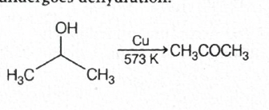
The image shows the direct conversion of the secondary
alcohol into a ketone under these conditions.
Step-by-step explanation
First identify the type of alcohol.
The structure shown is:
\((CH_3)_2CHOH\)
This is propan-2-ol, a
secondary alcohol.
Now recall the rule for alcohol vapours passed over heated
copper at \(573\,K\):
But tertiary alcohols do not have a hydrogen on the carbon
carrying the \((OH)\) group, so they cannot undergo
dehydrogenation in the same way. They mainly undergo
dehydration.
This is a very standard conversion from the chapter on
alcohols.
Why the correct option is right
Option (d) is correct because the starting
alcohol is secondary, and secondary alcohols give ketones on
heating with copper at \(573\,K\).
The ketone formed here is propanone \((CH_3COCH_3)\).
Why other options are wrong or less suitable
(a) propane is not formed under these
conditions.
(b) propene would be a dehydration product,
not the major product for a secondary alcohol with copper at
\(573\,K\).
(c) propyne is unrelated to this
transformation.
Exam tip / shortcut / elimination clue
The fastest way is to classify the alcohol first:
\(1^\circ \rightarrow\) aldehyde
\(2^\circ \rightarrow\) ketone
\(3^\circ \rightarrow\) alkene
Here the carbon bearing \((OH)\) is attached to two alkyl
groups, so it is secondary. That immediately points to
ketone formation.
Final result
The major product is propanone,
\((CH_3COCH_3)\).
So, the correct answer is (d).
Chapter / topic / subtopic
Chapter: Alcohols, Phenols and Ethers
Topic: Reactions of alcohols
Subtopic: Dehydrogenation of alcohols with
heated copper
Correct answer: (c) (A) is true but (R) is false
Explanation: Ammonia and its derivatives of the
form \(H_2N{-}Z\) do react with aldehydes and ketones to give
condensation products such as imines, oximes, hydrazones,
semicarbazones, and related compounds. But this reaction is not
irreversible. It is generally a
reversible reaction, especially under acidic or
aqueous conditions.
Condensation of carbonyl compounds with \(H_2N{-}Z\)
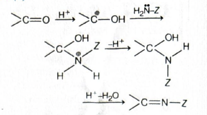
The image shows nucleophilic addition followed by loss of
water to form the condensation product.
Step-by-step explanation
In assertion–reason questions, check both parts separately.
Assertion (A): “Ammonia and its derivatives
\(H_2N{-}Z\) undergo condensation reaction with carbonyl
compounds.”
This is correct.
Aldehydes and ketones react with ammonia or ammonia
derivatives to form products containing a \((C{=}N)\)
linkage after elimination of water.
Reason (R): “This reaction is an example of
irreversible reaction.”
This is false.
The reaction is generally reversible.
Formation of the product is favoured when water is removed,
but the underlying process is not inherently irreversible.
Therefore:
Assertion = true
Reason = false
Hence the correct option is (c).
Concept used / theory behind it
Aldehydes and ketones contain a polar \((C{=}O)\) group,
making the carbonyl carbon electrophilic.
Ammonia and ammonia derivatives \((H_2N{-}Z)\) act as
nucleophiles and attack the carbonyl carbon.
The reaction generally proceeds through:
nucleophilic addition to the carbonyl group
formation of a carbinolamine intermediate
elimination of water
formation of a \((C{=}N{-}Z)\) product
This is why such reactions are called
addition-condensation reactions.
Because water participates in the equilibrium, the reaction
is reversible in nature.
Why the correct option is right
Option (c) correctly states that the
Assertion is true and the Reason is false.
The reaction definitely occurs, but calling it irreversible
is chemically wrong.
Why other options are wrong or less suitable
(a) is wrong because the Reason is not
true.
(b) is wrong for the same reason.
(d) is wrong because the Assertion is not
false.
Exam tip / shortcut / elimination clue
Whenever you see \(H_2N{-}Z\) with aldehydes or ketones,
think:
\((C{=}O) \rightarrow (C{=}N{-}Z)\)
Also remember that many condensation reactions involving
carbonyl compounds are equilibrium-controlled, not strictly
one-way reactions.
Final result
Assertion is true.
Reason is false.
So, the correct answer is (c).
Chapter / topic / subtopic
Chapter: Aldehydes, Ketones and Carboxylic
Acids
Topic: Nucleophilic addition and
condensation reactions of carbonyl compounds
Subtopic: Reaction of carbonyl compounds
with ammonia and its derivatives
Correct answer: (c) (II) \(<\) (I) \(<\) (III) \(<\)
(IV)
Explanation: Smaller \(pK_a\) means stronger
acid. The acidity of these carboxylic acids is mainly controlled
by the \((-I)\) effect of the electron-withdrawing group
attached near the \((COOH)\) group. The stronger the
electron-withdrawing effect, the more stable the carboxylate ion
and the smaller the \(pK_a\).
Step-by-step explanation
First use the basic relation:
stronger acid \(\Rightarrow\) smaller
\(pK_a\)
So we only need to compare acid strength.
All four compounds are carboxylic acids, but each has an
electron-withdrawing substituent.
Electron-withdrawing groups increase acidity by stabilising
the conjugate base \((RCOO^-)\) through the \((-I)\) effect.
Now compare the substituents:
\(CF_3{-}\) has very strong \((-I)\) effect because
fluorine is more electronegative than chlorine.
\(CCl_3{-}\) also has strong \((-I)\) effect, but less
than \(CF_3{-}\).
\(NO_2CH_2{-}\) is electron withdrawing, but its effect
is weaker than directly attached \(CX_3\) groups.
\(NCCH_2{-}\) is also electron withdrawing, but weaker
than \(NO_2CH_2{-}\).
\(CF_3{-}\) withdraws more strongly than \(CCl_3{-}\)
Final result
The correct \(pK_a\) order is:
\((II) < (I) < (III) < (IV)\)
So, the correct answer is (c).
Chapter / topic / subtopic
Chapter: Organic Chemistry
Topic: Acidic strength of carboxylic acids
Subtopic: Effect of electron-withdrawing
groups on \(pK_a\)
Correct answer: (b) A–III, B–IV, C–II, D–I
Explanation: Amides undergo Hoffmann’s
bromamide reaction, nitriles are reduced by \(LiAlH_4\),
\(C_6H_5SO_2Cl\) is Hinsberg’s reagent, and carbylamine reaction
is given only by primary amines. Therefore the correct matching
is A–III, B–IV, C–II, D–I.
Reagents and reactions used in the matching
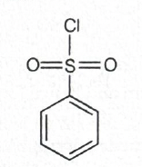
The image summarises the exact links needed for the matching
question.
Step-by-step explanation
This is a direct concept-matching question. Match each item
one by one.
(A) Amide
Amides on treatment with bromine and aqueous \(NaOH\)
undergo Hoffmann’s bromamide reaction.
So:
\(A \rightarrow III\)
(B) Nitrile
Nitriles are reduced by \(LiAlH_4\) to give primary
amines.
So:
\(B \rightarrow IV\)
(C) \(C_6H_5SO_2Cl\)
This is benzenesulphonyl chloride,
commonly called Hinsberg’s reagent.
So:
\(C \rightarrow II\)
(D) \(1^\circ\) amine
Primary amines give the
carbylamine reaction.
So:
\(D \rightarrow I\)
Thus the complete matching is:
\(A{-}III,\; B{-}IV,\; C{-}II,\; D{-}I\)
Hence option (b) is correct.
Concept used / theory behind it
Hoffmann bromamide reaction: converts an
amide into a primary amine with one carbon less.
\(LiAlH_4\) reduction: nitriles are reduced
to primary amines.
Hinsberg’s reagent: benzenesulphonyl
chloride \((C_6H_5SO_2Cl)\), used to distinguish primary,
secondary, and tertiary amines.
Carbylamine reaction: shown only by primary
amines when heated with chloroform and alcoholic \(KOH\),
producing foul-smelling isocyanides.
Why the correct option is right
Option (b) alone gives all four correct
matches:
\(A{-}III\)
\(B{-}IV\)
\(C{-}II\)
\(D{-}I\)
Why other options are wrong or less suitable
(a) is wrong because amide is not matched
with carbylamine reaction, and several other matches are
incorrect.
(c) is wrong because nitrile is not matched
with Hinsberg’s reagent.
(d) is wrong because \(1^\circ\) amine is
not matched with \(LiAlH_4\) here, and amide is not matched
with carbylamine reaction.